Face to face with the past
Catherine Clarke
| 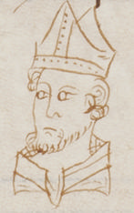 | 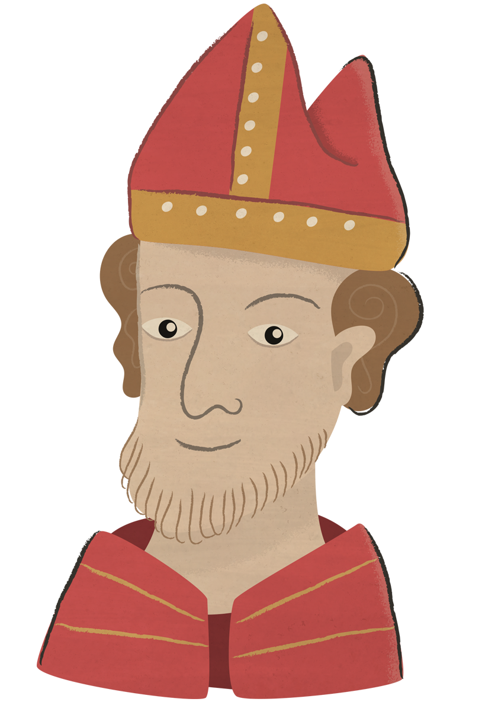 |
Our research into medieval Swansea has been shaped and framed throughout by ideas of witnessing and seeing: from our analysis of the statements of medieval witnesses in the William Cragh case and our reconstruction of their perspectives and vantage-points, to our exploration of different ways of representing and viewing the urban landscape of medieval Swansea. As a way of engaging with the medieval past, seeing is a powerful and immediate mode of acquiring knowledge. It allows participants – whether academics or members of the general public – to learn through direct sensory experience and to form a more direct, intimate connection with history than that usually achieved through conventional research and analysis. This sense of the power of seeing, and our tendency to privilege visual engagement as a particularly powerful and authentic connection with the world, has been observed and discussed by a number of commentators in recent years. In an article on technologies of imaging and visualisation in Humanities research, for example, Vincent Gaffney remarks on the ‘fetishization of visual experience in contemporary western society’, and the ubiquitous equation of knowledge with seeing across a range of different cultural contexts.
The potential challenges and different responses provoked by a culture in which knowledge is linked so intimately with visual experience have been evident in our own research into medieval Swansea, and perhaps most clearly in our work on visualisations of Swansea’s medieval landscape. You’ll find debates concerning the methodologies and style of our 3D visualisations played out on the project Blog, showing the different positions of members of the project team on questions such as how to indicate uncertainty or gaps in our evidence for the medieval landscape, as well as whether to present medieval Swansea in a photo-realistic or schematic idiom. The visualisation process certainly generated plenty of controversy and lively discussion amongst the project team! Photo-realistic renders have the capacity to offer a compelling, immersive visual experience, in which a viewer can ‘suspend disbelief’ and situate themselves within a medieval world. While the detail inherent in such photo-realistic renders often exceeds the available empirical evidence – and often includes details deliberately included to aid imaginative engagement, such as traces of human activity and detritus – they can enable viewers to experiment with different modes of enquiry and research, and different scholarly idioms and registers, led by creativity and imagination. These richly-realised virtual landscapes function as hypotheses, as spaces for testing out ideas, rather than as definitive statements about historical reality. However, scholars also have an obligation to work from empirical evidence, and to signal clearly where interpretation or conjecture goes beyond objective facts – a tension tackled in recent reflective projects and documents such as the London Charter. In the case of medieval Swansea, we’ve used two different visualisation styles: one which is conservative in approach and adds little detail to our (scarce) firm knowledge about the town’s urban landscape, and another, in stunning renders produced by Lorenzo Caravaggi, which makes provocative creative propositions about how the medieval town may have looked.
Our project also presented another, unforeseen, opportunity to think about witnessing the past and coming – in this case, literally – face to face with history. The witness depositions in the canonisation proceedings for Thomas de Cantilupe evoke intriguing portraits of individual figures from 13th - and early 14th-century Swansea (as well as the other historical individuals in the other Cantilupe miracle accounts, involving people from other locations such as Conwy). The witnesses to the William Cragh case from medieval Swansea include Mary de Briouze, the Lady of the Anglo-Norman Marcher Lordship, resident in the grandeur of Swansea Castle, but apparently sometimes at odds with her own husband’s style of rule. Then there’s Adam of Loughor, a boy of only thirteen at the time of Cragh’s hanging, who describes how he was too afraid to touch the bloodied corpse, or John of Baggeham, the Lord’s steward, who articulates his disapproval that a malefactor such as Cragh should have been spared from death. These engaging details, embedded within the witness depositions, offer us compelling clues about the lives and opinions of historical individuals. Something about these named figures and hints of their experiences and perceptions has the capacity to capture our imagination in a way far beyond general historical overviews and scholarly analysis. Ide.jpgying and examining the different witnesses was obviously central to our project of linking an edition of the William Cragh depositions with the new digital map of Swansea. We wanted to represent the characters visually in some way, to help users navigate between witness testimonies, compare character viewpoints and so on. But, how were we to do this? Obviously no original visual depictions of these individuals are available. We knew we had the option of producing modern images (as we did for the game associated with our previous Discover Medieval Chester project). But these would be purely the work of our modern imagination, with no basis in medieval evidence.
In the Vatican Library, consulting MS Vat. Lat. 4015, which contains the Swansea witness statements, Harriett Webster (our project Research Fellow and editor of the Cragh text) made a discovery. The manuscript includes marginal sketches throughout, representing characterful faces, as well as a drawing of what seems to be a church – and even a dog. The possibility began to emerge that these drawings – contemporary with the manuscript and showing a range of different types of medieval people – could be the basis for our own character images. We ordered photographs from the Vatican and collaborated with the artist Tom Woolley, who produced a set of drawings inspired by the medieval manuscript sketches. You can compare the original manuscript drawings with our 21st-century re-interpretations in the images below. These are creative re-makings which aim to be engaging and accessible. They reflect the artist’s own response to the medieval sources – they’re not the product of minute research into medieval costume and appearance, and they are of course constrained by the particular characters depicted in the original manuscript. They transpose the medieval sketches into a new visual idiom, though the style retains some of the freshness, naivete – and perhaps humour – of the original manuscript drawings. Significantly, our character images do derive in some way from that same imaginative world as the William Cragh text. This was an excellent outcome for the City Witness web resource, and also opened up a range of other questions and reflections on seeing, visual experience and knowledge of the medieval past.
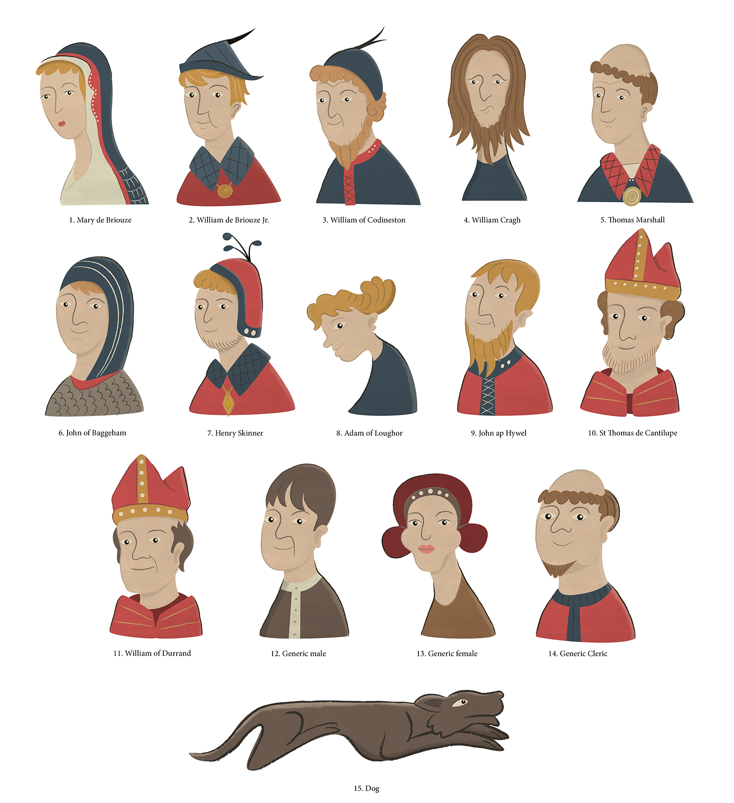
Firstly, what’s the purpose of these drawings in the original manuscript? It documents a serious business – a papal inquisition designed to establish whether Thomas de Cantilupe should be formally canonised – and these sketches of eccentric, caricatured faces might at first seem out of place in such a context. It’s possible that they play a role in the various mnemonic techniques deployed in the manuscript, adding further markers alongside the textual cues such as headers and rubrics which organise the various depositions. Sometimes, there’s a clear correspondence between the drawing and the adjacent text, such as the reference to ‘Dominus Thomas, scolaris’ (‘schoolboy’) on folio 44v, which we’ve used as the basis for Adam of Loughor, or the mention of ‘Juliana de Gregor’, sister of Thomas de Cantilupe, next to what is apparently a female face on folio 244v. But sometimes the connection is less clear and the drawings may instead function as a playful paratext which has little to do with the formal, official discourse of the deposition reports. The drawings in the manuscript do not purport to be of the figures with which we’ve associated them – this is one of the areas in which we’ve had to employ some creative licence. As you can see below, the medieval drawings have often been adapted in our re-interpretations.
An interesting example of this adaptation can be seen in the case of the image we’ve used as the basis for our picture of William Cragh (folio 244v). The medieval drawing depicts a rather solemn or mournful figure with long hair and a beard: these features seemed fitting for Cragh as a condemned man and an outlaw or rebel living outside normal urban society. (More playfully, it was also suggested that the long hair may have been an attempted to hide his unfortunate skin condition – ‘Cragh’ means ‘scabby’ in Welsh.) As shown below, the original manuscript drawing includes horns on the top of the man’s head – a detail we’ve removed for our depiction of William Cragh. It is difficult to establish why the manuscript drawing includes these horns. The adjacent manuscript text refers to four men who were healed of their ‘dishonour’ after being taken to the tomb of St Thomas de Cantilupe. The horns might suggest the mark of a cuckold or a similar physical embodiment of shame, or perhaps even the disfigurement associated with an illness such as leprosy. If we look beyond possible juxtapositions with the text itself, the drawing is evocative of medieval Wild Man or Green Man iconography, perhaps depicting a kind of hybrid human-animal figure. Depictions of men with horns are sometimes found in medieval sources, including in the tradition of representing Moses as a horned man (see Ruth Mellinkoff); the long hair and beard in MS Vat. Lat. 4015 might also suggest an Old Testament prophet. It is conceivable that the scribe was making a general association here between the Cantilupe canonisation trial, church legal process and Moses, giver of the first laws of the Judaeo-Christian faith.
Beyond this unusual example, the marginal drawings in MS Vat. Lat. 4015 appear to represent stock types and recognisable estates or kinds of people in medieval society, including, unsurprisingly, a number of monks and bishops. We’ve linked the drawings to named individuals (sometimes altering or re-interpreting details to do so), but obviously they were never intended to depict these specific people. The medieval manuscript reflects a tendency to ide.jpgy people in terms of their class, estate or kind; to assimilate the varied individual witnesses and figures associated with the de Cantilupe canonisation process into an easily-recognisable schema of social types. The drawings are ciphers which indicate the broad types of people involved in the trial, seemingly rather than any attempt to realise the unique appearance or identity of an individual. This, of course, is what we might expect from an early 14th-century document, written in a period when the existence of a notion of the individual which relates in any recognisable way to modern concepts is still vigorously contested amongst scholars (see for example the overview given by David Gary Shaw). Yet we on the City Witness project team are not the first to be engaged and inspired by the idea of encountering specific people – named, identifiable individuals – from the past, or to be attracted by the possibility of linking a historic name to a face. The recent discovery of the probable burial of Richard III resulted in the reconstruction of his face, based on craniofacial analysis and a computer process known as stereolithography. The unveiling of this model generated huge media attention and presented the opportunity – as far as possible – to look directly into the face of this 15th-century king. Once again, the excitement surrounding the public reception of this model reminds us of the power of visual experience to enable scholars and the general public alike to form powerful, intimate connections with history, and to complement the kind of knowledge normally produced by scholarly study. In Swansea Museum, another head offers a tantalising opportunity to stand face-to-face with an historical figure. In this case, the 14th-century carved stone head (accession number SM 1889.2) is supposedly a contemporary or near-contemporary depiction of Lady Alina de Mowbray, daughter of William de Briouze (senior), Lord of Gower, and presents an intriguing window not only on Swansea’s medieval past, but also on the continuing modern desire to see it for ourselves.
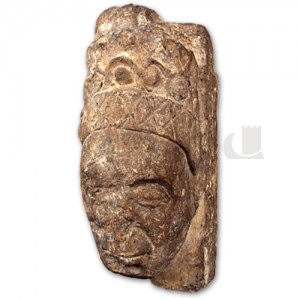
(Stone head, supposedly of Alina de Mowbray. Courtesy of Swansea Museum)
According to acquisition records, the stone head was given to Swansea Museum in 1889 by an S.C. Gamwell, having been found on the site of the old Rectory House in Fisher Street, Swansea, and thought to be originally from Saint Mary’s Church. The sculpture may have been part of a mullion from St Mary’s Church, and from its first recorded appearance in the Museum collection was associated with Alina de Mowbray. Alina is a colourful and fascinating figure in the medieval history of Swansea: after being promised the Lordship of Gower (together with her husband, John de Mowbray) on the death of her brother William in 1318, Alina’s inheritance was later challenged by a number of other claimants. John de Mowbray was executed and Alina only regained the Lordship of Gower in 1327, later marrying Richard de Pershall. Having been involved in the improvement works on Oystermouth Castle, Alina is primarily remembered in the popular imagination today as the ‘White Lady’ who haunts the medieval ruins.
Samuel Clearstone Gamwell, who donated the stone head of Alina to Swansea Museum, is himself an interesting and important figure in Swansea’s history. Editor of The Cambrian newspaper, Gamwell was also interested in science, law and history and a prolific donor of papers to the Museum. Gamwell also published poetry under the pseudonym ‘Pierre Claire’ (derived from his middle name), both in The Cambrian and collected, after his death, in the volume Some “Pierre Claire” Poems, edited by James Brown, by then himself editor of the newspaper (Swansea, 1897). The ‘Memoir’ of Gamwell prefaced to the poems (which is based on the Obituary in The Cambrian of 18 December, 1896) remembers him as ‘the cleverest pressman in South Wales’ and also comments on his interest in and knowledge of Swansea history, as well as his success as a ‘poetical competitor’ in the Eisteddfod.
Many of Gamwell’s poems demonstrate his fascination with Swansea’s history, and his concerns with conservation and protection of built heritage in the rapidly-expanding, industrial 19th-century city. A poem on ‘Howel the Good!’ (Hywel Dda) reflects Gamwell’s conviction that archaeology, history – and imagination – are necessary to recover history from obscurity. He writes:
O’er the lives that illumined the long-vanished Past
With mirth and with movement, the shroud
Of the centuries’ lengthening shadow is cast,
In whose darkness we lose them, or see them at last
As the landscape is seen through a cloud.
Archaeology lends us its glimmering lamps
Time’s tunnels and vaults to explore;
Tradition’s faint beam is bedimmed by the damps;
Proud history speaks but of courts and of camps,
And will tell us no syllable more. [...]
Gamwell goes on to declare that ‘faithful Research’ can rescue ‘notable Names’ from the silences of history: once again, a desire to ide.jpgy and connect with specific named individuals from the vast expanses of the past. Another poem, ‘On St Mary’s Church Tower’ imagines the animals carved in the church masonry coming to life at midnight, and debating the changes Swansea has seen since the Middle Ages. The Osprey acknowledges that ‘our ancient Borough has progressed / Since Newburgh and Breosa’s distant day’, while the Fish surveys the town’s key surviving medieval buildings of ‘This Church, that Hospital [St David’s], and yon Stronghold [the Castle]’. The Cock, however, laments Swansea’s failure to protect its built heritage as a means of connection with the past – and as a source of tourist revenue, resonating with similar concerns and arguments in the 21st-century city. He exclaims:
They had a Castle – which they might have kept
To draw delighted tourists to the spot;
A Holy Hospital – which now is swept
Away, and e’en its very site forgot;
A Church – where centuries have prayed and slept,
And yet they act as tho’ they prized it not.
Gamwell’s interest in preserving and championing the early history of Swansea extends to his authorship of The Official Guide and Hand-Book to Swansea and its District, published by The Cambrian at its Wind Street office in 1880. Just as in the poems, individual figures and particular medieval buildings form Gamwell’s way back into the town’s history, so in the Guide, historical characters appear alongside places and buildings to lead readers into the past. On pages 8 and 9, Gamwell includes a précis of the life of Alina de Mowbray, drawing out colourful details such as the ‘unthrift’ of her brother William de Briouze, her time in the Tower of London and her dealings with Hugh le Despenser.
It is perhaps Gamwell’s interest in Alina and research into her life for the Guide which prompts his association of her with the stone head found at Fisher Street. Other than the assertion in the Museum’s acquisitions register, there is no real evidence to suggest that the head represents Alina de Mowbray, though of course it is not impossible that a carving from the church should represent a member of the local ruling family and its primary benefactors (though a window mullion would be an unusual place for such a commemoration). Again, the prospect of looking directly into the face of a named, knowable medieval figure provides a compelling imaginative route into history.
In our own project, the processes of visualising medieval Swansea, and of creating character images from the evocative sketches in the MS Vat. Lat. 4015 have enabled us to engage with our primary materials in fresh ways, add interpretative layers to the evidence, and provide resources aimed at engaging wider, non-specialist and non-academic audiences. These aspects of our work have encouraged us to think about the particular value and power of visual experience – as well as its limitations or potential dangers. We’ve become acutely conscious of the desires we bring to the medieval past and the attraction of seeing what’s no longer visible – either individual figures from Swansea’s past, or indeed the largely lost medieval landscape of the city itself. Throughout, these themes and questions have returned us to our central project focus on the idea of the ‘witness’; on literal and figurative perspectives and ways of seeing and the importance of visual experience to knowledge, memory and history.
|
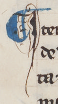 MS detail |
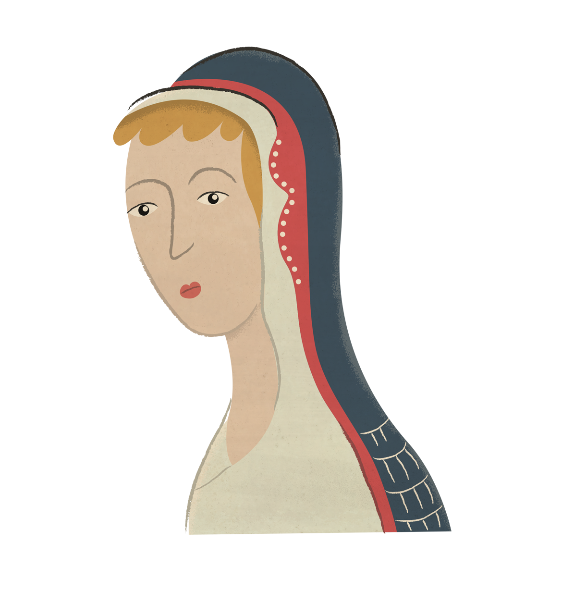 Lady Mary de Briouze |
|
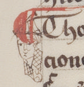 MS detail |
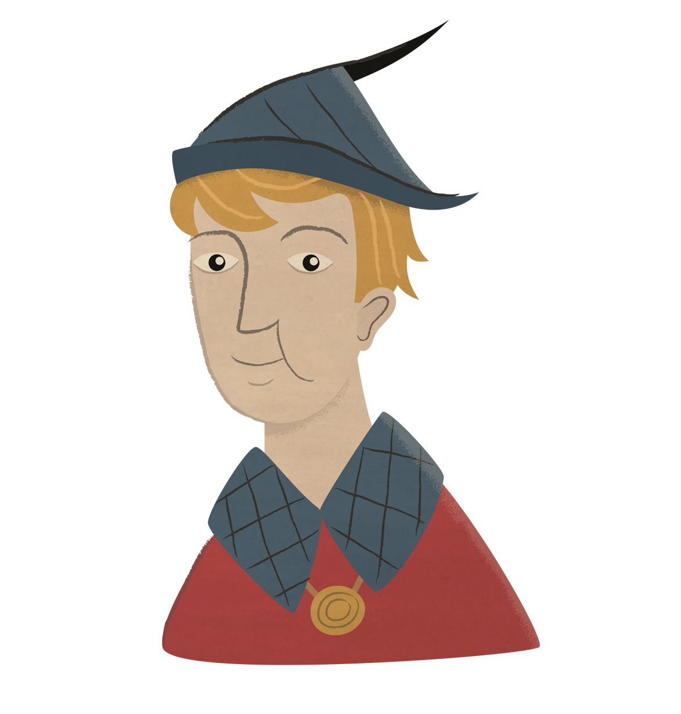 William de Briouze (junior) |
|
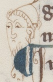 MS detail |
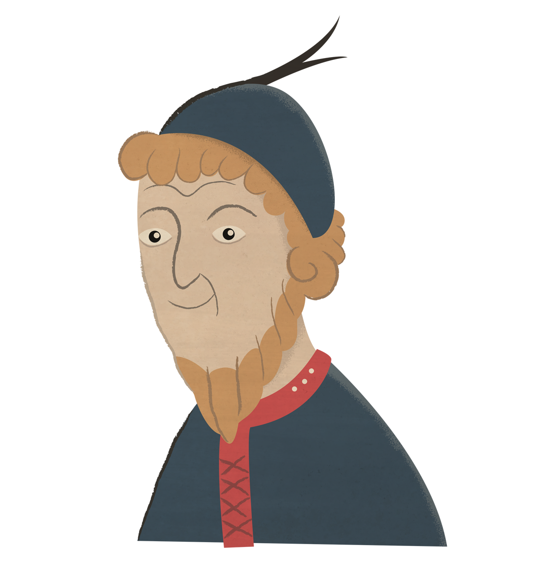 William of Codineston |
|
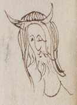 MS detail |
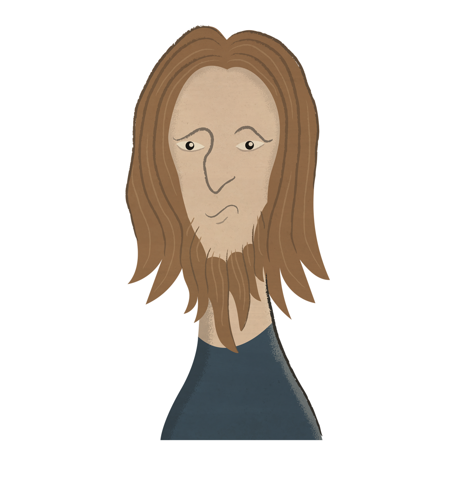 William Cragh |
|
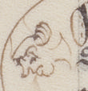 MS detail |
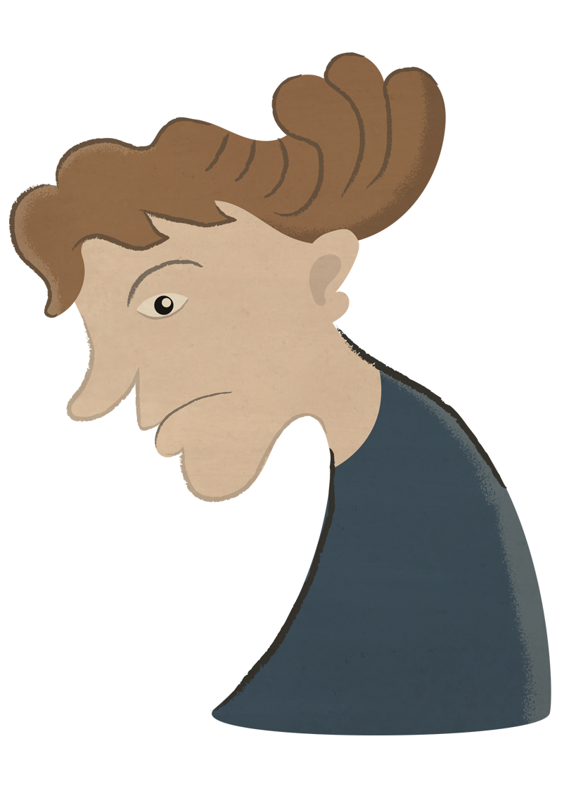 Adam of Loughor |
|
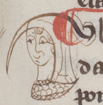 MS detail |
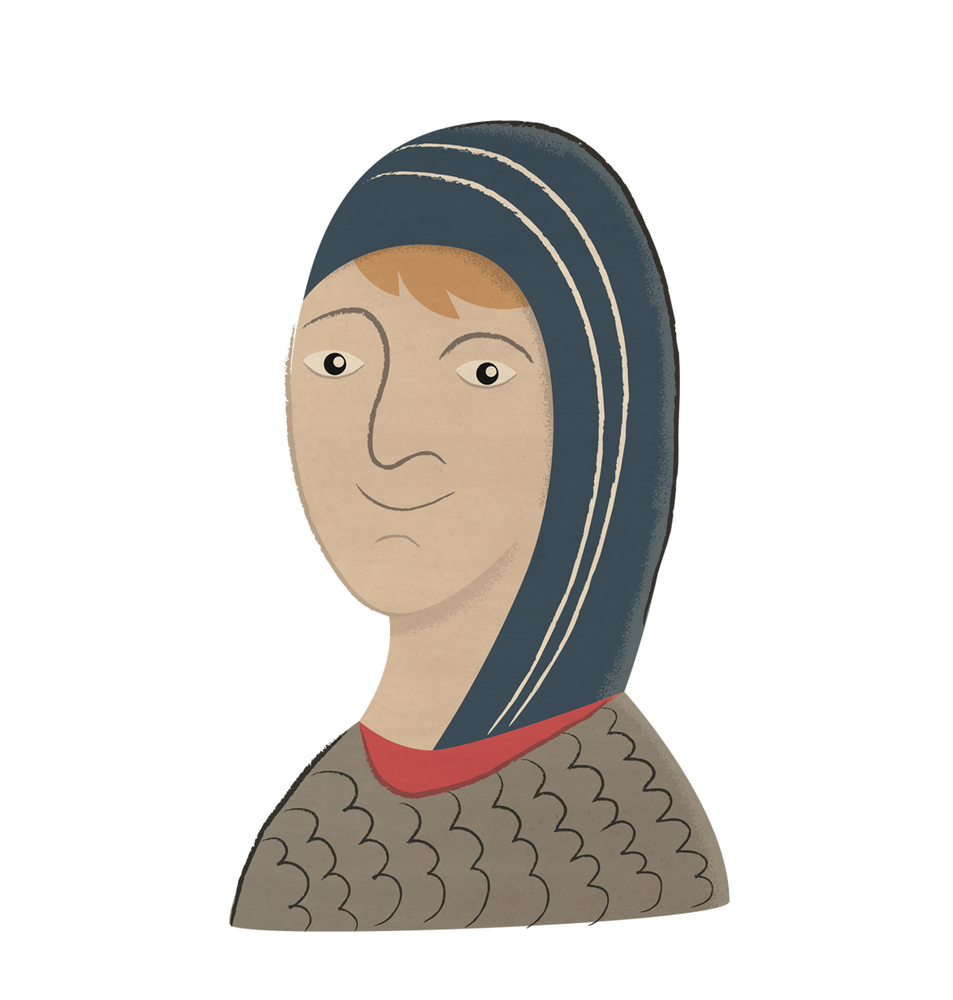 John of Baggeham |
|
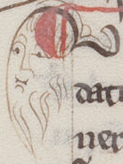 MS detail |
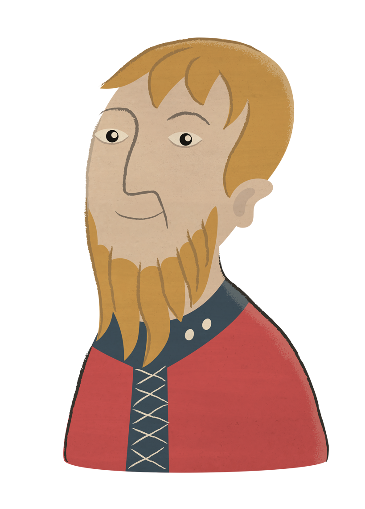 John ap Hywel |
|
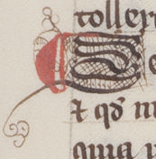 MS detail |
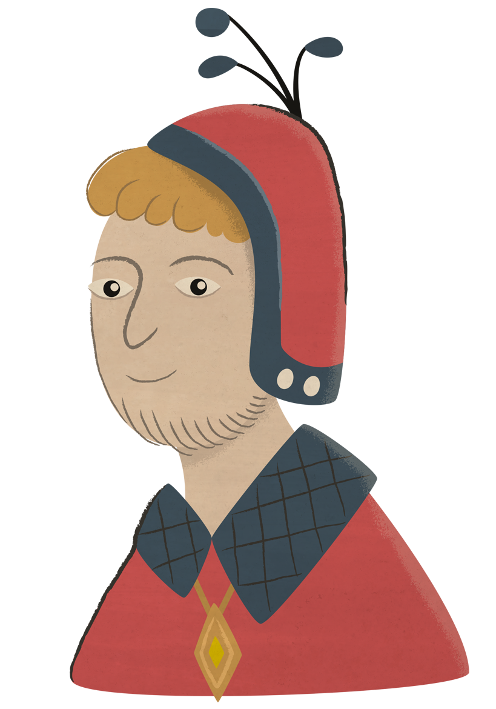 Henry Skinner |
|
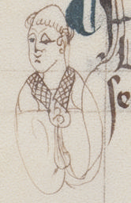 MS detail |
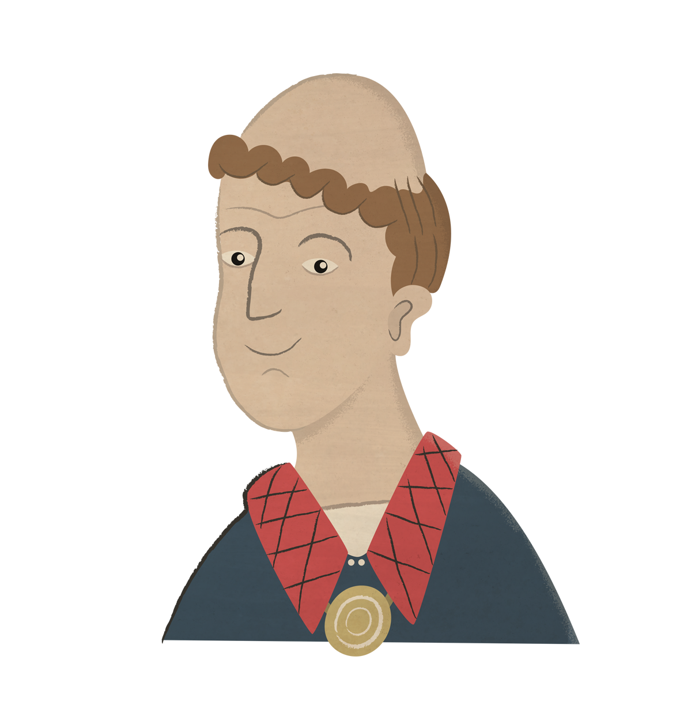 Thomas Marshall |
|
MS detail |
Thomas de Cantilupe |